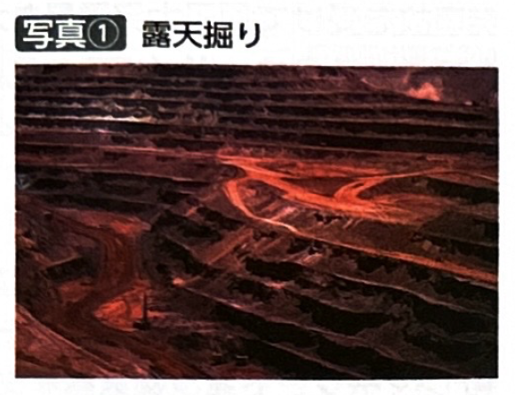
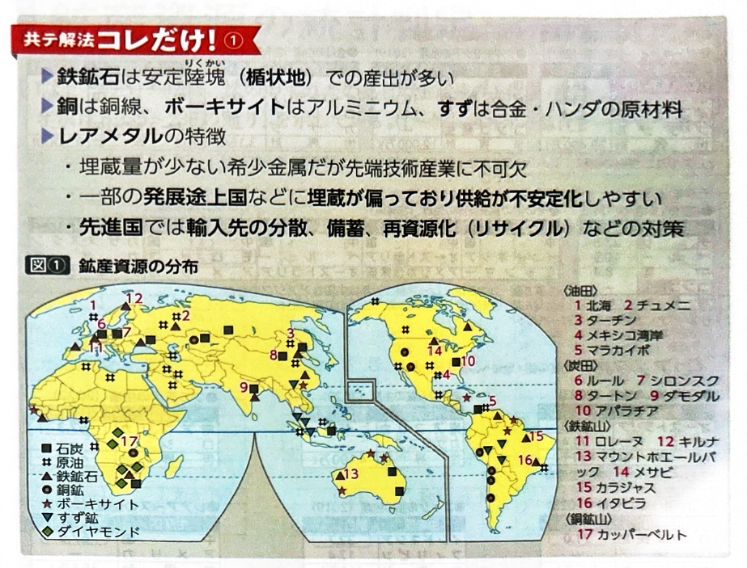
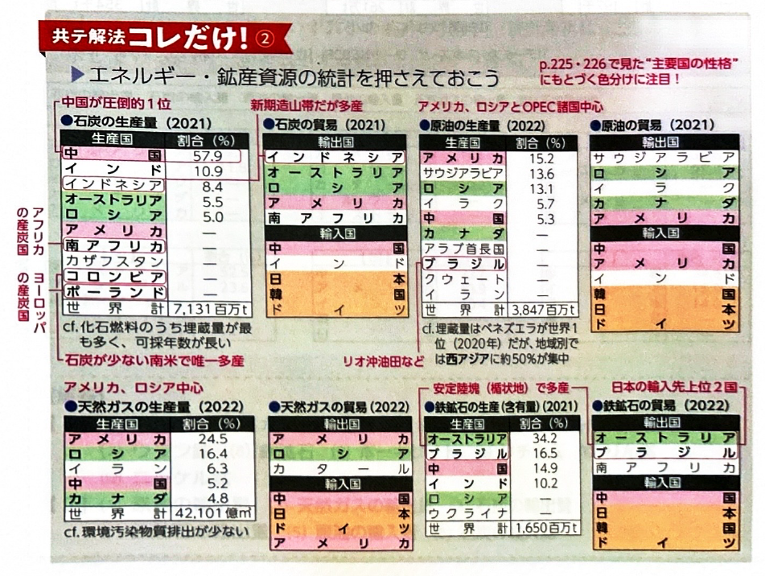
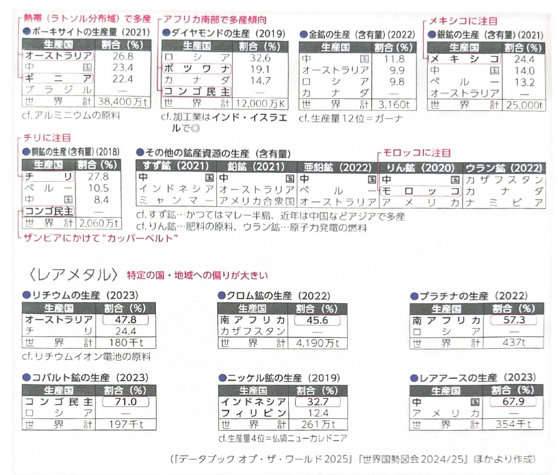

第4章 鉱工業 - 鉱産資源
ポイント総復習
1. 主要な鉱産資源の成因と分布
鉱産資源は、地球の歴史や地殻の成り立ち（大地形）と深く結びついています。
- 鉄鉱石：鉄鋼の主原料。数十億年前の先カンブリア時代に形成された鉄鉱床に由来するため、基盤岩が露出している安定陸塊（楯状地）での産出が圧倒的に多く、オーストラリア北西部やブラジル高原では大規模な露天掘りが行われています。
- 銅鉱：マグマの成分に由来するため、主に火山地帯（新期造山帯など）で産出されます。アンデス山脈をもつチリやペルー、アフリカのカッパーベルト（コンゴ民主共和国やザンビア）などが有名です。電気伝導性が高く、銅線など電気産業に欠かせません。
- ボーキサイト：アルミニウムの原料。熱帯のやせ土であるラトソルに残留・集積してできた酸化アルミニウムに由来するため、熱帯地域（オーストラリア北部やギニアなど）での産出が多いです。

2. レアメタル（希少金属）
流通量や使用量は少ないものの、現在のハイテク産業（スマートフォン、電気自動車、バッテリーなど）に不可欠な金属を総称してレアメタルといいます。
- 種類：リチウム、コバルト、タングステン、チタン、およびレアアース（希土類）などがあります。
- 特徴：産出地が一部の国（中国、コンゴ民主共和国、チリなど）に偏在しているため、国際情勢や輸出規制などによって価格や供給が不安定になりやすいという課題があります。



3. 【頻出】主な鉱産資源の生産国ランキング
各資源の生産国トップ3（特に1位と特徴的な国）は入試でよく問われます。
| 鉱産資源 | 1位 | 2位 | 3位 | 特徴・備考 |
|---|---|---|---|---|
| 鉄鉱石 | オーストラリア | ブラジル | 中国 | 安定陸塊（楯状地）での露天掘り。 |
| ボーキサイト | オーストラリア | ギニア | 中国 | アルミニウムの原料。熱帯のラトソル由来。 |
| 銅鉱 | チリ | ペルー | 中国 | 火山地帯。アフリカのカッパーベルトも重要。 |
| ダイヤモンド | ロシア | ボツワナ | カナダ | ※加工業はインドやイスラエルで盛ん。 |
| 金鉱 | 中国 | オーストラリア | ロシア | |
| 銀鉱 | メキシコ | 中国 | ペルー | ※メキシコが1位である点に注目。 |
基礎問題（理解度チェック）
Q1. 鉄鉱石と銅鉱の成因と産出地について、空欄を埋めなさい。
鉄鋼の主原料である鉄鉱石は、先カンブリア時代に形成された基盤岩が露出している
での産出が多く、オーストラリアやブラジルなどでは大規模な
が行われている。一方、電気伝導性が高く電気産業に不可欠な銅鉱は、マグマの成分に由来するため
で産出が多く、南米のチリやアフリカの
が主産地である。
Q2. ボーキサイトとレアメタルについて、空欄を埋めなさい。
アルミニウムの原料となる
は、熱帯の土壌である
に残留・集積した成分に由来するため、熱帯地域での産出が多い。また、リチウムやコバルトなど、スマホなどのハイテク産業に不可欠な希少金属の総称を
といい、これらは産出地が一部の国に偏在しているという特徴がある。
Q3. 各鉱産資源の生産国トップ（1位）の組み合わせとして、正しいものを空欄から選びなさい。
鉄鉱石の生産国1位は
、ボーキサイトの生産国1位も同じく
である。また、銅鉱の生産国1位は南米の
、銀鉱の生産国1位は中米の
である。
Q4. 鉄鉱石は、古生代に激しい造山運動を受けた「古期造山帯」において、当時の地層が複雑に折り重なった場所で多く産出される。
Q5. アルミニウムの原料であるボーキサイトは、熱帯特有のやせ土である「ラトソル」に由来する鉱物のため、オーストラリア北部やアフリカのギニアなど、熱帯気候の地域での産出が多い。